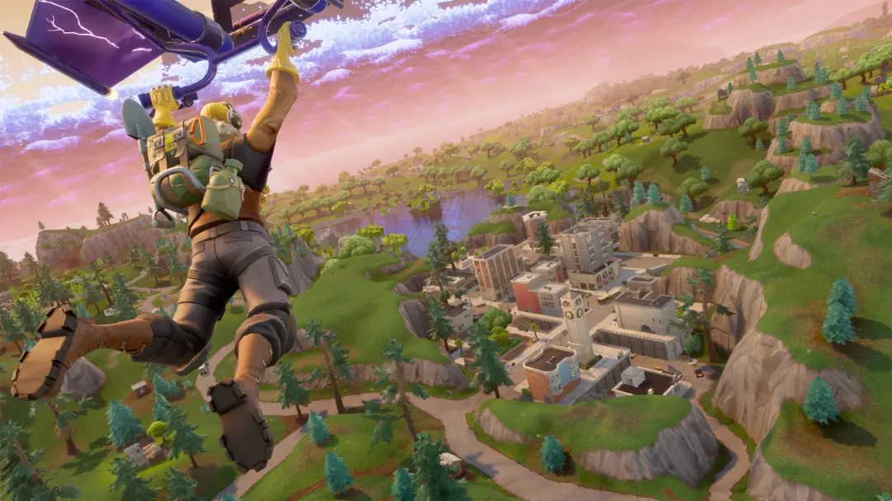
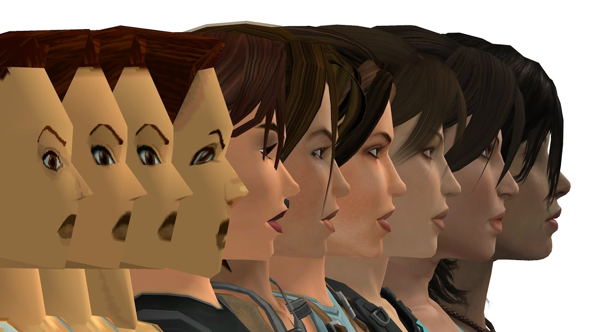
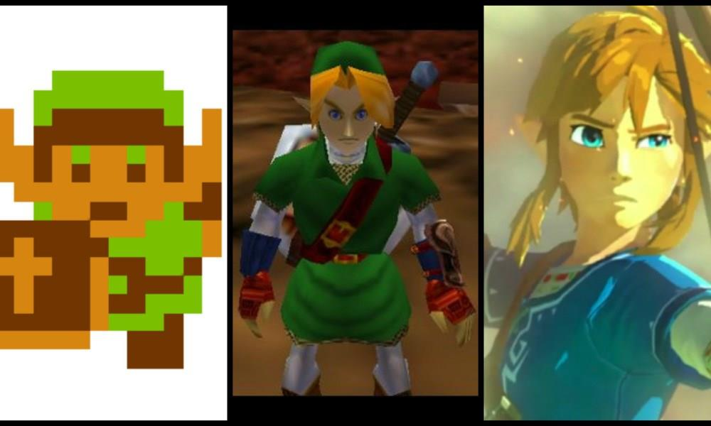

L'evoluzione della creatività e tecnologia con i videogiochi
slides
di Stefano Cecere
tecnologia, giochi, educazione
il nostro giocatore, un agente "intelligente"
a differenza di libri e film e musica che possono andare in play da soli, un videogioco, no!
Esempi: Zork, Colossal Adventure (1977-1980).
Enfasi sulla scrittura e sulla creazione di mondi attraverso la narrativa.
Arriva la grafica
Quali sono le differenze tra i videogiochi in cui segui una storia predefinita e quelli in cui puoi influenzare la storia? Quale preferite?
Primo gioco a fare un uso massiccio di grafica pre-renderizzata e una narrativa non lineare. Oltre a enigmi davvero sfidanti.
con Pac Man (1980) arrivano gli avversari, ovvero Intelligenze Artificiali antagoniste.
Innovativo per il combattimento a due giocatori e per l'introduzione delle combo, una meccanica che ha definito i giochi di combattimento successivi.
come pietra miliare del rendering 3D. Introduzione ai motori grafici e alla programmazione in tempo reale.
Innovativo per l'idea di "collezionare" creature, creando una rete di interazione tra giocatori attraverso lo scambio. È diventato un fenomeno culturale, unendo narrazione, strategia e game design.
Massively Multiplayer Online Role-Playing Game (MMORPG) che ha cambiato il modo di concepire i mondi persistenti online, introducendo meccaniche sociali complesse e un'economia virtuale.
Ha portato i videogiochi nel salotto di famiglie di tutto il mondo grazie ai controlli basati sul movimento. È stato cruciale per la diffusione del motion gaming e del gioco accessibile a un pubblico non tradizionale.
Innovativo per la sua meccanica basata sui portali e per la narrazione integrata con il gameplay.
Il bilanciamento tra difficoltà e accessibilità è cruciale. I designer devono considerare curve di apprendimento e diversità dei giocatori per evitare frustrazioni o noia
Un capolavoro di game design minimalista, con una logica semplice ma profonda. Ha introdotto la formula dei puzzle a caduta, diventando uno dei giochi più longevi e venduti di sempre.
Uno dei primi grandi successi arcade. Innovativo per l'uso della progressiva difficoltà , che aumentava man mano che i nemici si avvicinavano al giocatore.
La costruzione degli ambienti di gioco e il posizionamento di sfide e nemici all'interno di essi è cruciale per il ritmo e la narrativa. Ogni livello racconta una storia attraverso il design.
Esempio: Super Mario Bros. è noto per il design di livelli che insegnano al giocatore nuove meccaniche senza bisogno di tutorial espliciti.
Pietra miliare nel design dei platform 2D, introdusse meccaniche precise di controllo e un level design che insegnava al giocatore le regole del gioco attraverso l'esperienza diretta.

Innovativo per la combinazione di un battle royale e un sistema di costruzione in tempo reale, unito a un modello free-to-play che ha ridefinito il mercato dei giochi online e il concetto di giochi come servizi (games as a service).
Ha introdotto il concetto di sandbox totale, permettendo ai giocatori di costruire e creare liberamente in un mondo infinito. Ha aperto la strada al genere "creativo" e ha dimostrato il potere del gioco emergente.
Il suo contributo è stato particolarmente rilevante grazie alla colonna sonora dinamica e interattiva composta da Austin Wintory. La musica in Journey non è solo un accompagnamento, ma si adatta alle azioni e alle emozioni del giocatore, creando un'esperienza profondamente immersiva.


Gli shader sono piccoli programmi che definiscono il comportamento della luce e il rendering delle superfici nei videogiochi. I giochi moderni fanno uso massiccio di shader complessi per creare effetti realistici di luce, ombre e riflessioni.
Il pathfinding è la tecnica usata per far sì che gli NPC trovino il percorso migliore all'interno di un ambiente complesso. Giochi come F.E.A.R. (2005) hanno rivoluzionato l'IA dei nemici, rendendoli più intelligenti e adattabili.
Introduzione di un mondo aperto da esplorare, combinando elementi d'avventura, azione e puzzle-solving, un mix di meccaniche che ha influenzato interi generi.
Ha rivoluzionato il concetto di mondo aperto in 3D, permettendo ai giocatori di esplorare liberamente un ambiente urbano dettagliato con una grande libertà d'azione e scelte.
Qual è il comportamento più intelligente che avete visto in un nemico o in un personaggio non giocante? Cosa rende un'IA nei videogiochi davvero convincente?
play.unity.com
create.roblox.com
gdevelop.io Tutoriales
gdevelop.io academy
godotengine.org
migliaia di giochi, tutti con codice sorgente
cerca giochi